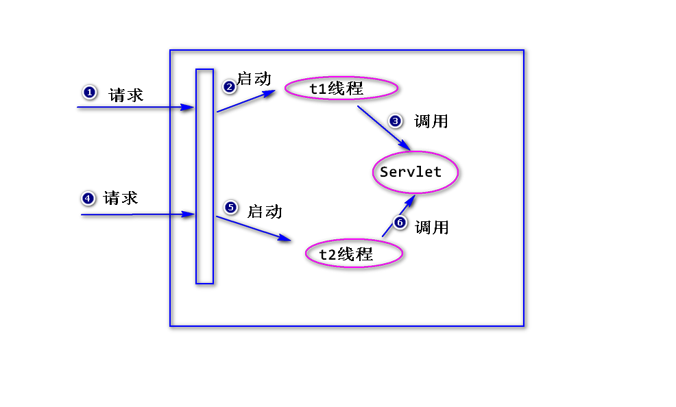
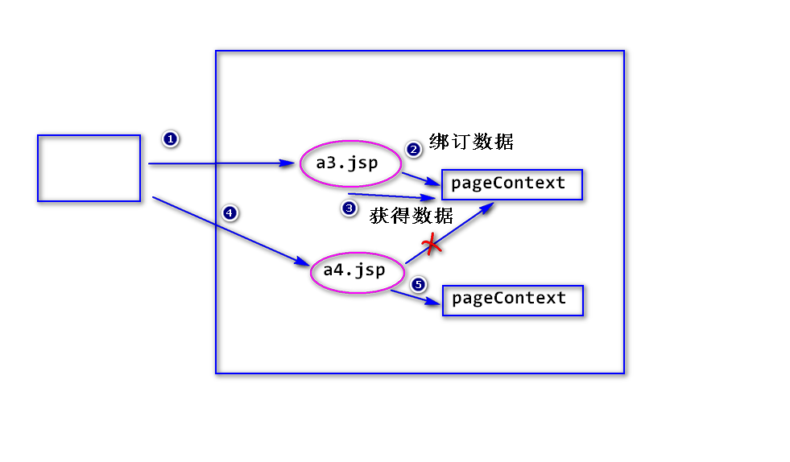

1.Servlet线程安全问题
(1)为什么说Servlet会有线程安全问题?
a. 容器对于某个servlet,只会创建一个实例。
b. 容器每收到一个请求，就会启动一个线程，由该线程来处理该请求。
这样，就有可能有多个线程同时去调用某个servlet实例，就有可能产生
线程安全问题(比如，这些线程都要修改某个属性值)。

(2)如何解决?
使用synchronized对有可能产生线程安全问题的代码块加锁。
注：
加锁会影响性能。
2.Servlet小结
(1)Servlet基础
1)什么是servlet?
2)如何写一个servlet?
3)servlet是如何运行的?
4)Http协议(了解)
(2)Servlet核心
1)如何获得请求参数值?
2)表单包含有中文参数值，如何处理?
3)Servlet输出中文，如何处理?
4)转发与重定向
a.什么是重定向?
b.如何重定向?
c.重定向的特点?
d.什么是转发?
e.如何转发?
f.转发的特点?
g.比较转发与重定向?
5)servlet容器如何处理请求资源路径?
6)如何让一个servlet处理多种请求?
7)servlet生命周期
a.什么是servlet的生命周期?
b.分成哪几个阶段?
c.相关的接口与类
8)路径问题
9)servlet线程安全问题
10)servlet上下文
(3)状态管理
1)什么是状态管理?
2)Cookie
a.什么是Cookie?
b.如何添加Cookie?
c.添加Cookie时的三个问题(编码问题、生存时间、路径问题)
d.读取Cookie
e.Cookie的限制
3)Session
a.什么是Session?
b.如何获得Session对象?
c.常用方法
d.session超时
e.删除Session对象
f.比较Session和Cookie
(4)数据访问
1)什么是dao?
2)如何写一个dao?
(5)过滤器与监听器
1)什么是过滤器?
2)如何写一个过滤器?
3)过滤器的优先级?
4)初始化参数?
5)过滤器的优点?
6)什么是监听器?
7)如何写一个监听器?
8)容器产生的事件主要有哪一些?
(6)典型案例
用户管理
登录(session验证)
3. jsp基础
(1)什么是jsp?
sun公司制订的一种服务器端动态页面技术规范。
注:
jsp是一个以".jsp"为后缀的文件，容器会将这个文件转换成
一个对应的servlet然后执行。
(2)如何写一个jsp文件?
1)html(css,js)
直接写即可。
2)java代码
方式一: <% java代码 %>
方式二: <%=java表达式 %>
方式三: <%! 声明变量或方法 %> (a1.jsp)
3)隐含对象
a.什么是隐含对象?
直接可以使用的对象。
b.为什么可以直接使用这些隐含对象?
因为容器会自动添加获得这些对象的代码。
c.有哪些隐含对象?
out,request,response
session： (a2.jsp)
application,
pageContext(页面上下文): (a3.jsp,a4.jsp)
注：
容器会为每一个jsp实例创建唯一的一个符合
PageContext接口要求的对象，该对象会一直
存在，除非jsp实例被删除。
作用1: 绑订数据，绑订到pageContext上的数据只有
对应的jsp实例能够访问(类似于钱包)。
作用2: 获得其它所有隐含对象。

config: (a5.jsp)
ServletConfig
exception: (a6.jsp,a7.jsp)
用来获得jsp运行过程当中产生的异常信息。
注：
只有当page指令的isErrorPage属性值为
true时才能使用。
page (了解) : jsp实例本身。
注: jsp对应的servlet实例，一般称之为jsp实例。
4)指令
a.什么是指令?
通知容器在将jsp转换成一个servlet时，做一些额外的处理，
比如导包。
b.语法
<%@ 指令名 属性＝值 %>
c.page指令
pageEncoding属性：指定jsp文件的编码。
contentType属性: setContentType。
import属性：导包。
errorPage属性：指定一个异常处理页面。
isErrorPage属性：缺省值是false,如果值为true,就可以使用
exception隐含对象了。
session属性:(a2.jsp)
缺省值是true,如果值为false,就不能使用session
隐含对象了。
d.include指令
<%@ include file=""%>
注：
通知容器，将file属性指定的文件的内容插入到该指令
所在的位置。
e.taglib指令
用来导入jsp标签。
### ５)注释 (a8.jsp)
方式一
注： 如果被注释的内容是java代码，java代码会执行。
方式二 <%-- 注释内容 --%>
注： 如果被注释的内容是java代码,java代码不会执行。
(3)jsp是如何执行的?
阶段一 容器要将jsp转换成一个对应的servlet。
html(css,js) --------->service方法里，使用out.write输出。
<% java代码 %> ----> 照搬到service方法里。
<%=java表达式 %> -----> service方法里，使用out.print输出。
<%! 声明变量或方法 %> ---> 为servlet添加新的属性或者方法。